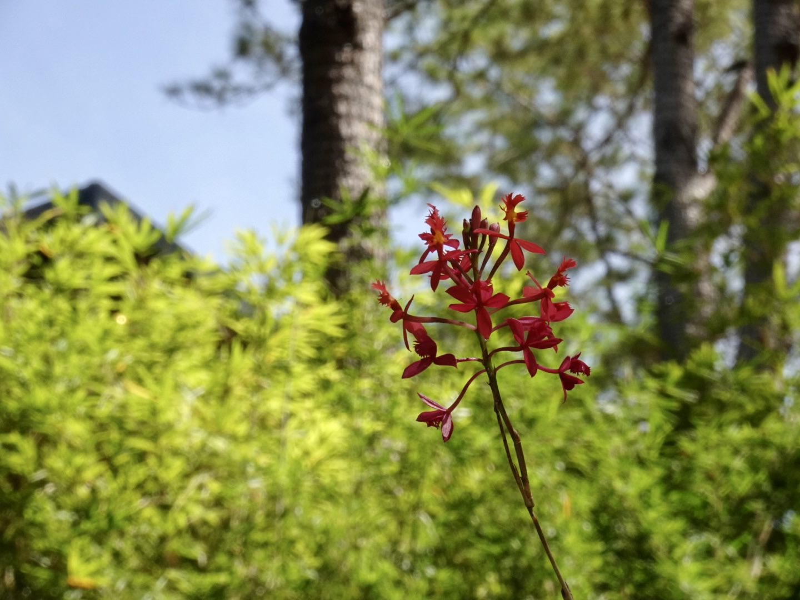

yes
I always loved science. Ever since I was young, I was always curious about the world around me. Getting to know more about the world around me gives me a satisfying feeling that makes me want to know more and more about science. There is something fascinating about how nature works, from the smallest organisms to the vast ecosystems that sustain life. I often find myself wondering how different organisms interact with one another, how the environment shapes their lives, and how everything in nature is connected.
Eventually, I gained an appreciation for nature. Whenever I am around lush forests or on top of a high place like Baguio, I can't help but feel relaxed and content.